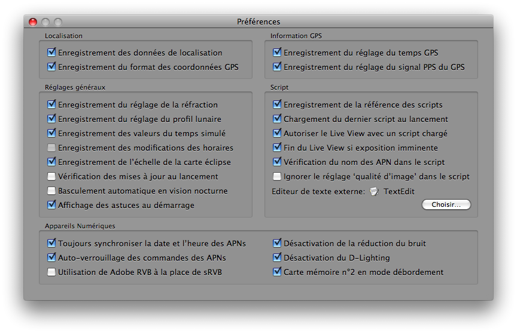

Préférences
Pour modifier les préférences de l’application Lunar Eclipse Maestro, ouvrez le dialogue Préférences.
-
Dans le menu Apple sélectionnez Préférences…

De nombreux réglages ne sont disponibles qu’en utilisant les menus contextuels de la carte de l’éclipse, du schéma Lune-Ombre/Pénombre Terrestre, de la fenêtre de la carte du ciel.
Il est fortement recommandé d’activer le réglage «Auto-verrouillage des commandes des APNs» car cela améliore grandement le contrôle des appareils numériques. Les différentes opérations seront par exemple plus rapides (substantiellement avec les APNs Nikon et dans une moindre mesure avec les Canon) et plus fiables.
Pour faire fonctionner la visée écran et/ou la prise de vue en visée écran depuis un script il faut activer le réglage «Autoriser le Live View avec un script chargé».
|